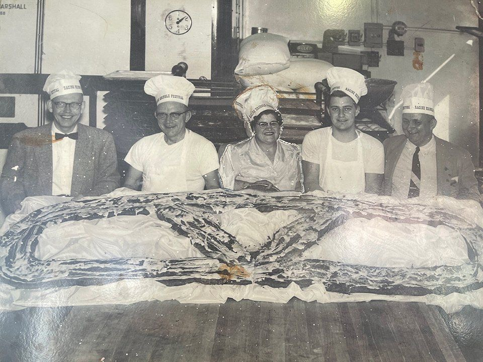
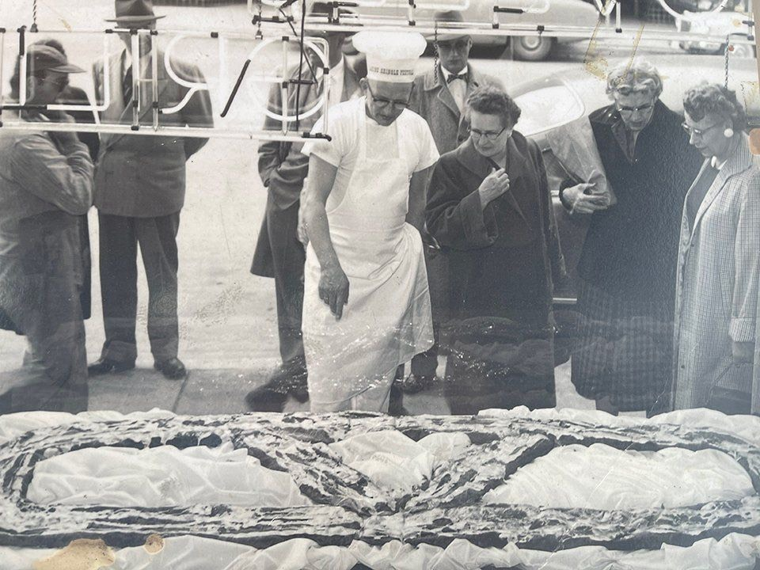

Our story
From Odense to a corner in West Racine
1905
Born in Odense, Denmark
Laurits Bendt Bendtsen was born in Odense, where he learned the baking trade and decided to come to America to open his own bakery.
Iowa
A farm, then a move
He first arrived at a farm in Iowa as part of a sponsorship to immigrate. In a short time he relocated to Racine, aware of the many Danish descendants in the community.
1934
Bendtsen’s Bakery opens
Following his dream, Laurits bought a business corner in West Racine and established Bendtsen’s Bakery. It has remained the only location.
Today
Four generations at the bench
His grandson Ben Bendtsen, and now Ben’s son, still hand roll the dough the way it has been done since 1934, with no preservatives added.
“My Danish grandfather, father, myself, and now my son have taken pride in our work in producing the best kringle that you can purchase.”Ben Bendtsen